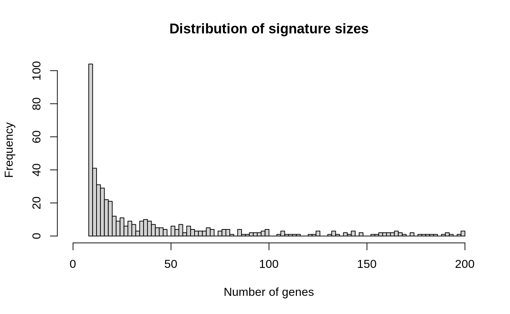

xCellData.RmdAbstract
Instructions on how to obtain 489 cell type gene signatures from Aran et al., 2017.The xCellData package provides a R / Bioconductor resource for obtaining and representing 489 cell type gene signatures from (Aran, Hu, and Butte 2017).
This packages uses the unisets BaseSets class to represent the collection of signatures. However, the data itself is distributed with the package as a GMT file, which may be parsed and imported by other packages (e.g. GSEABase GeneSetCollection, GeneSet tbl_geneset).
The script used to download and preprocess the data is distributed with the package. You can find it at the following location:
## [1] "/home/travis/R/Library/xCellData/scripts/makeData.R"Briefly, the script downloads “Additional file 3: The 489 cell type gene signatures. (XLSX 417 kb)” from the https://genomebiology.biomedcentral.com website and reformats the content of the published Microsoft Excel file into a GMT text file.
We use the xCellData() function to parse the GMT file distributed with the package into a unisets BaseSets object.
## BaseSets with 20803 relations between 5079 elements and 489 sets
## element set
## <character> <character>
## 1 C1QA aDC_HPCA_1
## 2 C1QB aDC_HPCA_1
## 3 CCL13 aDC_HPCA_1
## 4 CCL17 aDC_HPCA_1
## 5 CCL19 aDC_HPCA_1
## ... ...
## 1 IL2RA Tregs_HPCA_3
## 2 KCNA2 Tregs_HPCA_3
## 3 LAIR2 Tregs_HPCA_3
## 4 MCF2L2 Tregs_HPCA_3
## 5 RGS1 Tregs_HPCA_3
##
## @elementData
## IdVector of length 5079 with 5079 unique identifiers
## Ids: C1QA, C1QB, CCL13, CCL17, ...
## Metadata: (0 columns)
##
## @setData
## IdVector of length 489 with 489 unique identifiers
## Ids: aDC_HPCA_1, aDC_HPCA_2, aDC_HPCA_3, aDC_IRIS_1, ...
## Metadata: source (1 column)The signatures may then be used for downstream analyses such as cell type annotation.
For instance, the BaseSets object can be split into a list of signatures, for use in functions such as lapply.
## List of length 489
## names(489): Adipocytes_ENCODE_1 ... pro B-cells_NOVERSHTERN_3One may also inspect the number of genes in each signature.
dat <- setLengths(xsig)
hist(
dat, breaks = 100, xlim=c(0, max(dat)),
main = "Distribution of signature sizes", xlab = "Number of genes"
)
Example of packages using xCellData include:
## R Under development (unstable) (2019-05-20 r76548)
## Platform: x86_64-pc-linux-gnu (64-bit)
## Running under: Ubuntu 14.04.5 LTS
##
## Matrix products: default
## BLAS: /home/travis/R-bin/lib/R/lib/libRblas.so
## LAPACK: /home/travis/R-bin/lib/R/lib/libRlapack.so
##
## locale:
## [1] LC_CTYPE=en_US.UTF-8 LC_NUMERIC=C
## [3] LC_TIME=en_US.UTF-8 LC_COLLATE=en_US.UTF-8
## [5] LC_MONETARY=en_US.UTF-8 LC_MESSAGES=en_US.UTF-8
## [7] LC_PAPER=en_US.UTF-8 LC_NAME=C
## [9] LC_ADDRESS=C LC_TELEPHONE=C
## [11] LC_MEASUREMENT=en_US.UTF-8 LC_IDENTIFICATION=C
##
## attached base packages:
## [1] parallel stats4 stats graphics grDevices utils datasets
## [8] methods base
##
## other attached packages:
## [1] unisets_0.99.0 S4Vectors_0.21.22 BiocGenerics_0.29.2
## [4] xCellData_0.0.1 knitr_1.23 BiocStyle_2.13.0
##
## loaded via a namespace (and not attached):
## [1] Rcpp_1.0.1 lattice_0.20-38
## [3] Rsamtools_1.99.5 Biostrings_2.51.5
## [5] assertthat_0.2.1 rprojroot_1.3-2
## [7] digest_0.6.19 R6_2.4.0
## [9] GenomeInfoDb_1.19.3 plyr_1.8.4
## [11] backports_1.1.3 RSQLite_2.1.1
## [13] evaluate_0.13 zlibbioc_1.29.0
## [15] rlang_0.3.4 annotate_1.61.1
## [17] blob_1.1.1 Matrix_1.2-17
## [19] rmarkdown_1.12 pkgdown_1.3.0
## [21] desc_1.2.0 BiocParallel_1.17.18
## [23] stringr_1.4.0 RCurl_1.95-4.12
## [25] bit_1.1-14 DelayedArray_0.9.9
## [27] compiler_3.7.0 rtracklayer_1.43.3
## [29] xfun_0.7 htmltools_0.3.6
## [31] SummarizedExperiment_1.13.0 GenomeInfoDbData_1.2.1
## [33] roxygen2_6.1.1 bookdown_0.10
## [35] IRanges_2.17.4 matrixStats_0.54.0
## [37] XML_3.98-1.19 crayon_1.3.4
## [39] GenomicAlignments_1.19.1 MASS_7.3-51.4
## [41] bitops_1.0-6 commonmark_1.7
## [43] grid_3.7.0 xtable_1.8-3
## [45] GSEABase_1.45.0 DBI_1.0.0
## [47] magrittr_1.5 graph_1.61.1
## [49] stringi_1.4.3 XVector_0.23.2
## [51] reshape2_1.4.3 fs_1.2.6
## [53] xml2_1.2.0 tools_3.7.0
## [55] bit64_0.9-7 Biobase_2.43.1
## [57] yaml_2.2.0 AnnotationDbi_1.45.1
## [59] BiocManager_1.30.4 GenomicRanges_1.35.1
## [61] memoise_1.1.0Aran, Dvir, Zicheng Hu, and Atul J. Butte. 2017. “XCell: Digitally Portraying the Tissue Cellular Heterogeneity Landscape.” Genome Biology 18 (1): 220. https://doi.org/10.1186/s13059-017-1349-1.